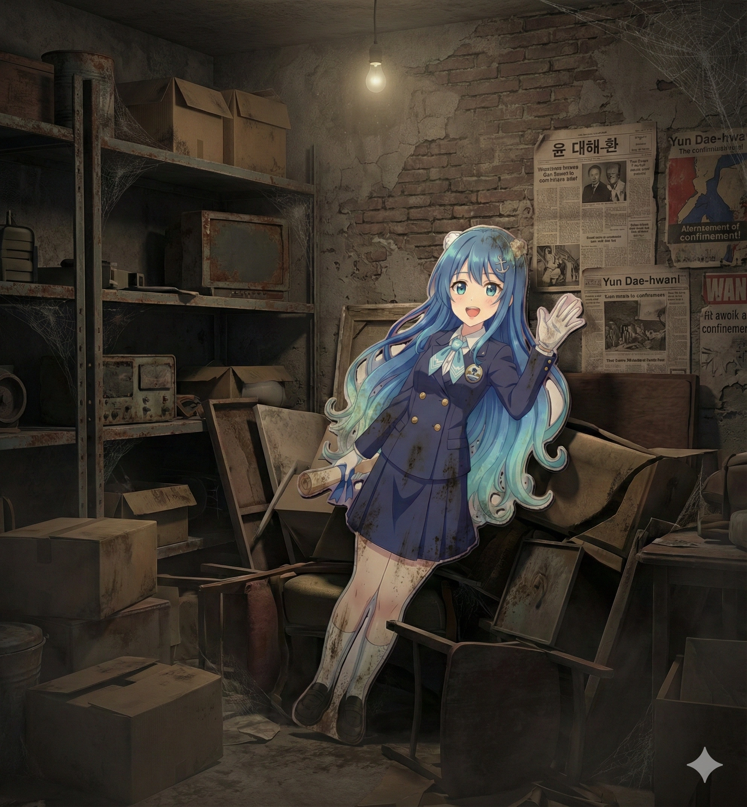
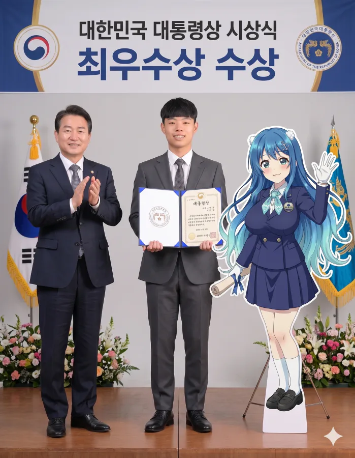
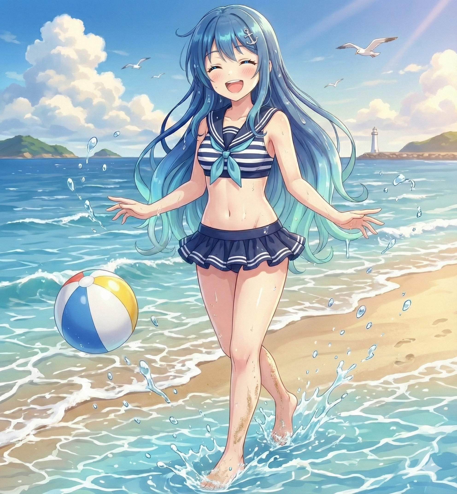
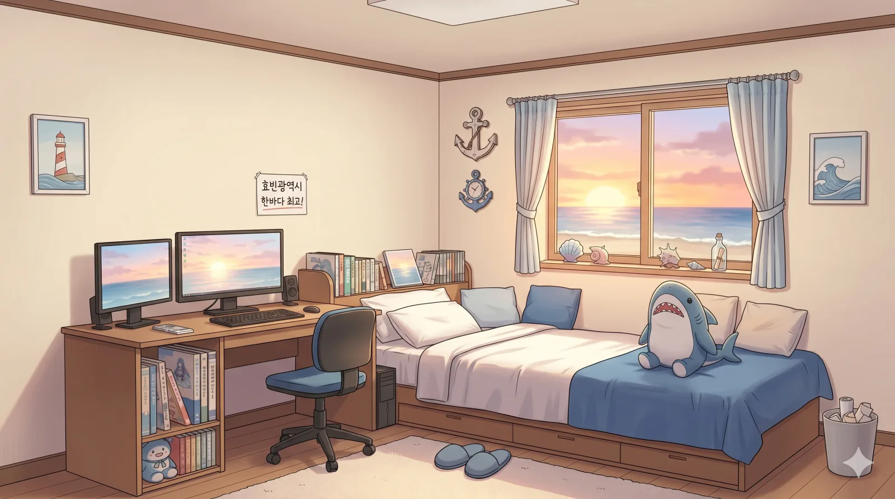
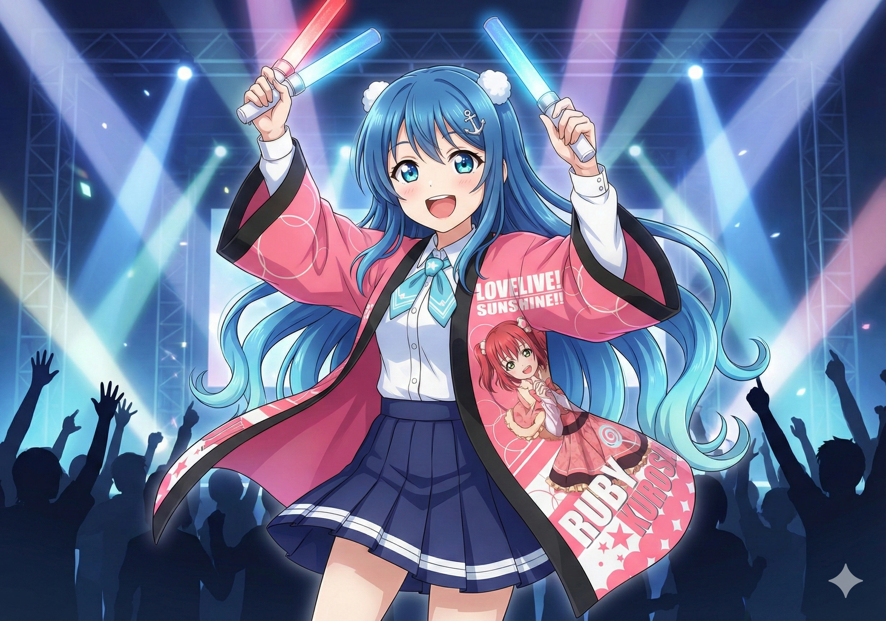
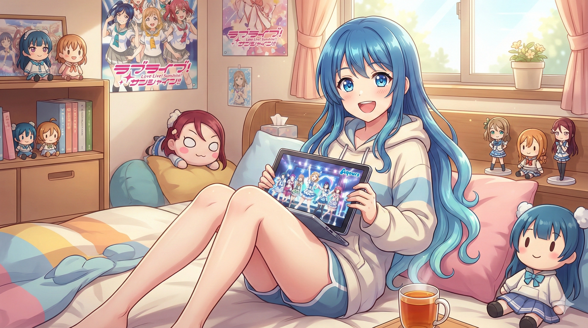
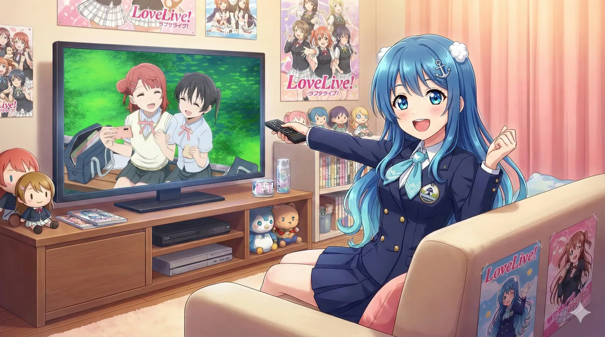
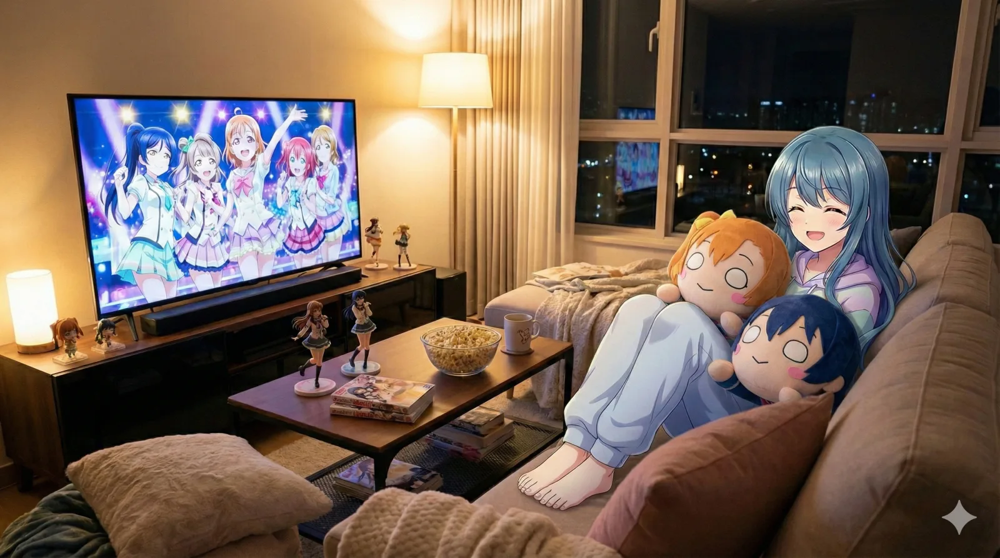
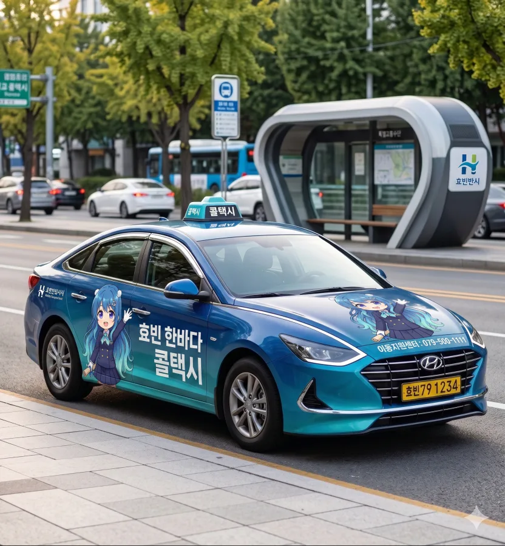

- 1. 개요
- 2. 역사 (Relationship Timeline)
- 2.1. 제1막: 창조주 (1998~2006)
- 2.2. 제2막: 박해자 (2006~2008)
- 2.3. 제3막: 수호자 (2014~2022)
- 2.4. 제4막: 영혼의 파트너 (2022~)
- 3. 상세 설정
- 3.1. 외모 (Visuals)
- 3.2. 목소리 및 성우
- 3.3. 성격 및 특징
- 3.4. 취미 및 특기
- 3.5. 취향 (Likes & Dislikes)
- 4. 팬덤 (항해사)
- 5. 2차 창작 (Secondary Creation)
- 6. 인간 관계
- 7. 관련 굿즈
- 8. 여담
1. 개요
효빈광역시를 상징하는 공식 마스코트. 2000년 7월 1일, 밀레니엄의 시작과 함께 효빈항 앞바다에서 태어난 '바다의 요정'이다.
짙은 네이비 블루(Navy Blue)의 긴 생머리가 특징이며, 효빈항의 상징인 닻 모양 로고가 박힌 세일러 스타일 제복을 착용한다. 동복과 하복이 구분되어 있는 디테일이 살아있다.
한때는 예산 낭비라는 명목으로 폐기될 뻔한 위기를 겪었으나, 암흑기를 견뎌내고 극적으로 생환한 효빈시 현대사의 산증인이다. 현재는 효빈광역시청 대변인실 안쪽 '특별 휴게실'에 거주하며 홍보대사 자격으로 활동 중이다. 2022년 박효빈 시장 취임 이후 킹블레이드를 장착한 마법소녀 역동적인 이미지로 전성기를 맞이했다.

효빈광역시청 본관 전경을 배경으로 환영 인사를 건네는 공식 홍보 포스터. 윤대환 치하의 암흑기를 벗어나, 대중교통 마스코트들을 아우르는 효빈시 최고 존엄의 지위로 격상되었음을 상징한다.
2. 역사 (Relationship Timeline)
그녀의 삶은 효빈시 역대 시장들과의 관계 속에서 드라마틱하게 변화해왔다. 단순한 마스코트를 넘어, 시장의 철학에 따라 '지옥'과 '천국'을 오간 파란만장한 생존기 그 자체다.
2.1. 제1막: 창조주 (The Creator)
박현만 전 시장 (1958년생) 시절 탄생했다. 당시 박 시장은 새 천년(Y2K)을 맞아 기존의 촌스러운 '호돌이' 류의 관공서 마스코트 관행을 깨고, "감성의 시대에 맞는 '사람 형상'의 캐릭터가 필요하다"며 한바다를 기획했다.
당시 40대 초반이었던 박 시장은 소위 '건담 세대'이자 서브컬처에 이해도가 깊은 인물이었다. 시의회에서도 일부 강경 보수 성향의 '꼰대' 의원들만 "왜놈 만화 캐릭터 같다", "눈이 너무 커서 징그럽다"며 반대했을 뿐, 소장파 의원들이나 젊은 층은 "신선하다", "우리 시도 드디어 트렌드를 탄다"며 옹호론을 펼쳤다. 박 시장은 반대파 의원들을 상대로 "이것은 21세기형 사이버 펑크 미학이다!"라고 3시간 동안 일장연설을 하며 예산을 지켜냈다는 전설이 있다. 시대를 너무 앞서간 아버지
탄생 초기에는 지역 마스코트에 불과했지만, 2004년경 초고속 인터넷 보급과 함께 디시인사이드 등지에서 일명 '효빈시청 눈나'라는 별명으로 짤방이 돌기 시작하며 폭발적인 인기를 얻었다. 당시 네티즌들은 "공무원들이 이런 거나 만들고 있다니 세금이 아깝지 않다"며 열광했고, 이는 훗날 강력한 팬덤 '항해사'가 형성되는 시발점이 되었다.
이러한 인기에 힘입어 2006년 5월, 박현만 시장 임기 말에 개최된 '제1회 HAF (Hyobin Animation Festival)'는 그야말로 대박을 터뜨렸다. 한바다 코스프레를 한 홍보 도우미들과 한정판 굿즈를 보기 위해 전국에서 수만 명의 인파가 효빈항으로 몰려들었고, 인근 횟집의 광어가 동날 정도였다고 한다. 이는 한바다의 전성기이자, 다가올 암흑기 직전의 마지막 불꽃이었다.
2.2. 제2막: 박해자 (The Oppressor)
윤대환 전 시장 (두청운수 일가) 시절은 한바다에게 그야말로 지옥 그 자체였다. 윤대환은 취임 즉시 "계집애 그림이 시청의 위엄을 떨어뜨린다", "돈 안 되는 짓거리는 다 치워라"며 한바다를 폐기 처분하고 지하 2층 비품 창고에 유폐시켰다. 문화 파괴자
당시의 상황은 단순한 해고가 아닌 숙청(Purge)에 가까웠다. 다음은 시청 내부에 암암리에 전해 내려오는, 당시 살벌했던 시장실 상황의 재구성 기록이다.
청원경찰들에 의해 지하 2층 먼지 쌓인 비품 창고 앞으로 끌려온 한바다. 손에는 구겨진 '해고 통지서'가 들려 있다.
한바다: (울먹이며) "저... 정말 여기로 들어가야 해요? 1호선 개통식에도 가야 하는데..."
(쿠궁- 무거운 철문이 닫히고, 암흑 속에서 그녀가 쓰고 있던 '2000년 밀레니엄 고글'만 희미하게 빛난다. 밖에서는 돈불라의 기괴한 웃음소리가 들려온다.)

윤대환 시절, 효빈시청 지하 2층 비품 창고 구석에 버려져 먼지와 거미줄을 뒤집어쓴 한바다 판넬. 벽에 붙은 윤대환의 기사와 낡은 가구들이 당시 행정의 폭력을 증명한다. 이 사진이 유출된 직후 분노한 '항해사'들이 시청으로 몰려들었다.
결국 그녀는 16개월간 지하 창고에 유폐되었다. 그사이 지상에서는 끔찍한 '미적 테러(Aesthetic Terrorism)'가 벌어졌다. 윤대환은 자신의 비자금 조성을 위해 급조한 괴물 캐릭터 '돈불라(Donbulla)'를 시의 상징으로 지정했다.
또한, 2006년 대박을 쳤던 '제2회 HAF (2007년 예정)'를 "오타쿠들이나 모이는 저질 행사"라며 일방적으로 취소해버렸다. "그딴 거 할 돈으로 보도블록이나 깔아!"라는 망언과 함께였다. 이에 행사를 준비하던 상인들과 1년을 기다려온 전국의 팬들이 격분했다.
아이러니하게도, 초기 한바다 캐릭터를 "세금 낭비"라며 반대하던 일부 시민들조차 윤대환 시기를 겪으며 태세 전환을 하게 되었다.
칙칙한 갈색(Muddy Brown) 도색의 두청운수 버스가 도로를 점령하고, 흉물스러운 돈불라 인형이 시청 앞에 서 있는 꼬라지(...)를 1년 넘게 지켜본 시민들은
"차라리 눈 큰 파란 머리 여자애가 백번 천번 낫다", "그때가 효빈의 리즈 시절이었다"며 한바다를 그리워하기 시작했다. 구관이 명관
하지만 2007년 11월 30일, 대법원 판결로 윤대환이 시장직을 상실하자 분노한 시민들이 시청으로 난입해 창고 문을 부수고 그녀를 구출해 냈다. 햇빛을 다시 본 그녀는 "다시는 이 도시가 갈색으로 물들지 않게 하겠다"고 다짐하며, 윤대환의 흔적을 지우는 데 앞장섰다고 한다.
2.3. 제3막: 수호자 (The Guardian)
김성민 전 시장 (1972년생)은 한바다의 든든한 삼촌이자 매니지먼 사장이었다. '러브라이브(μ's)' 세대인 그는 캐릭터가 가진 치유와 통합의 힘을 정확히 알고 있었다.
김 시장은 한바다를 단순한 그림이 아니라 '시정의 파트너'로 격상시켰다. 딱딱한 행정 명령서나 공사 안내판에 한바다의 부드러운 일러스트를 삽입해 시민들의 거부감을 줄이는 '감성 행정(Moe Administration)'을 펼쳤다.
실제로 도로 공사로 인해 민원이 폭주하던 현장에, 땀을 흘리며 "열심히 공사 중이에요! 조금만 참아주세요~"라고 말하는 귀여운 한바다 입간판을 세우자 민원이 80% 감소했다는 기적적인 통계가 있다. (...) 보수적인 의회에서 "캐릭터 예산을 삭감하라"고 공격할 때마다, 김 시장은 온몸으로 막아내며 한바다의 품위 유지비(디자인 리뉴얼 비용)를 사수해 냈다. 덕업일치의 표본
2.4. 제4막: 영혼의 파트너 (The Soul Partner)
현 박효빈 시장 (1996년생)은 한바다의 '성덕(성공한 덕후)'이자, 그녀를 전국구 스타로 만든 총괄 프로듀서다. 1996년생인 박 시장에게 2000년생 한바다는 유치원 시절부터 봐온 '친근한 동네 누나'이자 '효빈시 그 자체'였다.
박 시장은 취임 후 "어릴 적 동경하던 누나와 함께 효빈을 '덕질의 성지'로 만들겠다"고 선언했다. 그는 한바다에게 단순한 마스코트를 넘어선 '인격'을 부여했다. 유명 성우 섭외는 물론, MBTI(ENFJ) 설정, 맛집 탐방 브이로그 촬영 등 아이돌에 버금가는 매니지먼트를 시전했다.
현재 공식 석상에서 시장 본인과 한바다(홀로그램/등신대)가 나란히 서서 브리핑을 하는 '더블 센터(Double Center)' 체제는 효빈시만의 명물이 되었다. 항간에는 박 시장이 월급의 절반을 한바다 굿즈 제작비(사비)로 쓴다는 소문이 있다. 2026년 현재, 한바다는 킹블레이드를 장착한 역동적인 이미지로 제2의 전성기를 누리고 있다.

서브컬처 캐릭터 역사상 전무후무한 '대통령상 시상식 등신대 난입' 사건. 박효빈 시장이 한바다 주무관의 하드캐리(...)로 시정 운영 효율화 및 도시 브랜드화를 이뤄내 2025년 대한민국 대통령상 최우수상을 수상하는 영광의 순간이다. 분명 상은 시장님이 직접 받는데 정작 옆에서 당당하게 V를 하며 씬스틸러로 등극한 한바다 등신대의 초현실적인 광경이 전국 뉴스 데스크를 그야말로 장식해 버렸다. 이쯤 되면 시장이 덕질을 전국구로 자랑하려고 상을 탄 게 학계의 정설 박효빈 체제 하에서 한바다의 위상이 국가구급으로 격상되었음을 상징하는 전설의 짤방.
3. 상세 설정
3.1. 외모 (Visuals)
공식적으로 '효빈의 푸른 바다를 의인화한 외모'를 지녔다. 가장 큰 특징은 머리카락으로, 정수리의 짙은 코발트블루(#0047AB)에서 끝부분의 아쿠아 민트색(#7FFFD4)으로 이어지는 '오션 웨이브 그라데이션' 헤어스타일이다. 이는 수심이 깊은 먼바다에서 얕은 해변으로 이어지는 효빈항의 바다색을 상징한다. 미용실에서 이대로 염색해달라고 하면 견적이 얼마나 나올지 두려워지는 머리색이다
오른쪽 머리에는 닻(Anchor) 모양의 금속 핀을, 왼쪽 머리에는 조개 모양 머리 장식을 착용해 좌우 비대칭의 조화를 이룬다. 눈동자는 여름철 바다를 쏙 빼닮은 청량한 에메랄드빛 벽안이다.
단정한 제복에 가려져 잘 드러나지 않지만, 사실 효빈교통공사 생태계를 초토화시키는 세계관 최강자급 글래머 체형의 소유자다. 공식 프로필상 신장은 156cm로 아담한 단신에 속하지만, 쓰리사이즈는 무려 B97 - W59 - H87에 컵 사이즈는 G컵이라는 어마무시한 흉부 장갑(...)을 자랑한다. 이게 공무원이야 그라비아 아이돌이야
이 압도적인 바스트 수치 덕분에 지급받은 기본 제복 셔츠 단추가 항상 비명을 지르며 튕겨져 나갈 듯 위태로워 보인다는 묘사가 자주 등장한다. 156cm의 작은 키에 G컵이라는 비현실적인 질량을 견디느라 만성 어깨 결림과 허리 통증에 시달리지 않을까 심히 걱정될 정도다 공식 일러스트에서도 59cm의 잘록한 개미허리와 대비되는 폭발적인 볼륨감이 우월하게 묘사되는데, 팬들 사이에서는 이 엄청난 밸런스가 모든 것을 휩쓰는 거대한 해일 효빈항 앞바다의 압도적인 풍요로움(...)을 상징한다 카더라.

전설의 여름 해변 화보효빈항을 배경으로 한 여름 수영복 샷. 그동안 제복에 봉인되어 있던 G컵의 위력이 해방되며 항해사 팬덤을 완전히 초토화시켰다.
 특별 봉사활동 메이드복
특별 봉사활동 메이드복
이벤트성으로 착용한 클래식 메이드복. 흉부 사이즈를 맞추지 못해 앞섶이 터질 듯한 아슬아슬한 핏이 오히려 완벽한 갭 모에를 완성했다.
이 압도적인 피지컬(...) 때문에 윤대환의 아들이자 일베충으로 악명 높은 윤재훈이 이끄는 악성 패거리가 시청 민원 게시판에 좌표를 찍고 테러를 가한 사건이다. 이들은 "공공기관 마스코트가 너무 선정적이다", "시민의 혈세로 저런 야한 캐릭터나 만들고 있다"며 온갖 생떼를 썼다. 평소엔 룸살롱 VIP면서 2D 캐릭터한테 엄격한 내로남불의 정석
하지만 윤재훈의 얄팍한 의도와는 정반대로, 이 논란이 각종 서브컬처 커뮤니티로 퍼져나가자 오히려 "효빈시가 꼴잘알(...)이다", "시장님이 갓캐를 만드셨다"며 폭발적인 호응을 얻어버렸다. 결과적으로 전국의 성인 오타쿠 계층이 한바다 굿즈를 싹쓸이하기 위해 효빈시청 지하 굿즈샵으로 성지순례를 오는 기현상이 발생했고, 단 일주일 만에 굿즈 1년 치 재고가 완판되며 시 재정에 어마어마한 흑자를 안겨주었다. 오타쿠의 구매력을 얕본 자의 최후
이에 단단히 긁힌(...) 윤재훈이 효빈시청 광장 앞에서 '한바다 퇴출' 1인 시위를 감행했으나, 하필 그날이 한바다 한정판 아크릴 스탠드 발매일이었다. 결국 전날 밤부터 오픈런을 뛰러 온 수백 명의 한바다 팬클럽(통칭 '항해사') 인파에 둘러싸여, 오타쿠들의 거대한 파도 속에서 초라하게 찌그러진 굴욕 인증샷만 남기고 도망쳐야 했다. 진정한 의미의 물리적 고립
이 사태를 집무실 창문으로 여유롭게 지켜보던 박효빈 시장은 곧바로 시청 공식 SNS에 "전국 오타쿠 여러분의 막강한 화력이 곧 시 재정 확보이자, 진정한 사회복지 정책의 실현입니다.^^ 매출이 곧 복지!"라는 도발적인 한 줄 논평을 남겨 윤재훈의 멘탈을 완전히 가루로 만들어 버렸다. 사회복지학과 전공자의 무서움
3.2. 복장 및 소품
기본 복장은 공무원 특유의 단정함과 신뢰감을 강조하는 네이비색 더블 버튼 블레이저와 무릎 위로 살짝 올라오는 회색 플리츠스커트다. 왼쪽 가슴에는 효빈시청 공식 엠블럼 와펜이 금장으로 부착되어 있으며, 행정관으로서의 품위를 위해 항상 티 없이 맑은 흰색 예식용 장갑을 착용한다.
하지만 앞서 언급된 G컵의 비현실적인 흉부 장갑 때문에, 이 단정해야 할 더블 버튼 블레이저의 가슴 쪽 단추 2개가 항상 터지기 직전의 아슬아슬한 텐션을 유지하고 있다. 단추: 죽여줘... 숨을 크게 쉴 때마다 팽팽해지는 셔츠 주름과 튕겨져 나갈 것 같은 단추의 조합 덕분에, 단정함보다는 오히려 섹시함과 위태로움(...)이 배가된다는 평이 지배적이다.
3.2. 목소리 및 성우
| 구분 | 성우 | 연기 톤 & 성우 개그 (Actor Allusions) |
|---|---|---|
| 한국어 | 조경이 |
또렷하고 신뢰감 있는 '아나운서 톤'과 장난기 넘치는 '여동생 톤'을 자유자재로 오간다. 시장님에게 예산을 타낼 때는 목소리 톤이 3옥타브 올라간다는 소문이 있다. ※ 결재가 계속 반려되면 갑자기 창을 휘두르는 시늉을 하며 "오라버니...!"를 찾으며 흑화한다고 한다. (엘소드 - 아라 한) |
| 일본어 | 아이미 (愛美) |
특유의 허스키함이 섞인 '하이텐션 아이돌' 연기가 특징. 대표 대사는 "Yousoro! 효빈의 바다는 오늘도 맑음!"이다. ※ 회식 자리 노래방에 가면 갑자기 별 모양 스티커를 얼굴에 붙이고 "반짝반짝 두근두근(키라키라 도키도키)!"을 외치거나, 기타를 치며 록 스피릿(Rock Spirit)을 발산한다고 한다. (BanG Dream! - 카스미 / 밀리언 라이브 - 줄리아) |
3.3. 성격 및 특징
기본적으로 ENFJ (정의로운 사회운동가) 성향이다. 언제나 에너지가 넘치며, 우울해하는 시민이 있으면 먼저 다가가서 사탕(주로 엠마 베르데 빵맛)을 건네는 친화력을 가졌다. 근데 엠마 빵은 맛없기로 유명하다

과거 지하 창고의 트라우마를 씻어주기 위해 박효빈 시장이 배려한 공간. 푸른 바다 뷰가 보이는 따뜻한 방 안에는 영상 편집용 듀얼 모니터 세팅과 각종 덕질 포스터, 그리고 애착 상어 인형(블로하이)이 놓여있다.
평소에는 단정하고 친절한 공무원 모드지만, 매년 10월 열리는 HAF (효빈 애니메이션 페스티벌) 기간만 되면 숨겨왔던 '덕력'을 100% 개방한다. 이때는 시청 유니폼 대신 과감한 코스프레(주로 자신의 아이돌 버전)를 하고 무대 1열에서 킹블레이드를 흔드는 모습이 자주 목격된다. 시장님과 쌍으로 흔들고 있다 이 모습이 효빈시의 '덕후 친화적(Otaku-Friendly)' 정책을 상징하는 아이콘이 되었다.
하지만 마냥 밝기만 한 것은 아니다. 16개월간의 감금 생활을 버텨낸 '생존왕'이다. 윤대환 치하의 지하 창고에서 쥐들과 대화하며 버텼던 경험 때문에 웬만한 악플이나 민원에는 눈 하나 깜짝하지 않는 강철 멘탈을 소유하고 있다. 바퀴벌레급 생명력 다만 어두운 곳이나 좁은 곳에 갇히는 것을 극도로 무서워하는 폐쇄공포증이 트라우마로 남아있다.
3.4. 취미 및 특기
가장 큰 취미는 시내버스 '도색' 감상하기다. 간선버스의 파란색(#01B7ED)과 지선버스의 초록색(#37B484) 조합을 보며 심신의 안정을 얻는다고 한다. 과거 칙칙한 갈색 버스만 보던 시절의 반작용이다.
특기로는 1호선부터 8호선, 빈효선, 7호선(트램)까지의 모든 역명을 10초 안에 랩처럼 읊는 '지하철 노선도 타임 어택'이 있다. 쇼미더머니 나가도 될 기세
또 다른 숨겨진 특기는 바로 오타게(Wotagei/Cyllalume Dance)다. HAF 전야제 축하 공연 때 양손에 킹블레이드를 3개씩(발가락 사이까지 끼우면 8개) 들고 '썬더 스네이크'와 '로망스' 기술을 완벽한 정박자로 구사한다. 그 동작이 얼마나 절도 있고 정확한지, 효빈경찰서 교통과에서 "교통 수신호 요원으로 스카우트하고 싶다"는 공문을 보냈을 정도라고 한다. (...) 이 재능을 왜 여기서 썩혀

항해사(팬덤)들이 가장 열광하는 순간. 핫피(축제용 겉옷)를 걸치고 무대에서 양손에 킹블레이드를 든 채 오타게를 시전하는 'HAF 여신' 모드다. 이때만큼은 공무원이 아니라 완벽한 2D 아이돌이다.
또한, 리듬게임 BanG Dream! 걸즈 밴드 파티!의 초고수이기도 하다. 난이도 30레벨 곡(육조년과 하룻밤 이야기 등)을 엄지손가락(...)만으로 풀콤보(Full Combo) 치는 기행을 보여준다. 점심시간에 휴게실에서 "타닥타닥"하는 살벌한 터치 소리가 들린다면 십중팔구 한바다가 헬로해피 곡을 치며 스트레스를 풀고 있는 것이다.
3.5. 취향 (Likes & Dislikes)

방구석 덕질 모드 (침대)퇴근 후 편안한 후드티 차림으로 침대에서 태블릿으로 라이브 영상을 감상 중. 주변을 꽉 채운 굿즈들이 찐사랑을 증명한다.

거실 각잡기 모드휴일에는 TV와 플레이스테이션을 켜고 제대로 각을 잡는다. 포스터로 도배된 벽면이 럽순이의 위엄을 뽐낸다.

최애와 혼연일체대형 TV, 팝콘, 그리고 거대한 네소베리 굿즈에 완전히 파묻혀서 행복도 100%를 찍은 바다 요정의 은밀한 이중생활.
- 좋아하는 것: 엠마 베르데 빵, 효빈 1호선(자신의 상징색과 같아서), 박현만 전 시장(아버지), 김성민 전 시장(삼촌), 킹블레이드(박효빈 시장이 사준 보물 1호, HAF 필수템).
- 선호하는 애니메이션: 《러브 라이브! 선샤인!!》과 《니지동》의 광팬이다. 이유는 단순한데, '바다가 많이 나와서'라고 한다. (...) 특히 선샤인의 와타나베 요우를 동경하여 '요우소로(Yousoro)!' 경례 각도가 현역 해군 부사관급으로 완벽하다. 블루레이 전권을 소장 중이며, 시장실에 몰래 포교용으로 갖다 놓기도 한다.
- 싫어하는 것:
4. 팬덤 (항해사)
공식 팬덤 명칭은 '항해사(Navigators)'이다. 단순히 귀여운 캐릭터를 좋아하는 수준을 넘어, 윤대환 시장 시절의 탄압을 함께 견뎌낸 '전우애'로 뭉쳐있는 것이 특징이다. 당시 지하 창고에 유폐된 한바다의 등신대를 몰래 구출해 온 것도 이들 팬덤의 소행(?)이었다고 전해진다.
팬덤의 규모는 전국적이며, 매년 7월 1일(한바다 생일)이 되면 전국 각지에서 효빈항으로 몰려드는 '대순례(Grand Pilgrimage)' 행렬이 이어진다. 이때 이들이 소비하는 숙박비와 식비가 효빈시 3분기 관광 수입의 40%를 차지할 정도라고 하니, 그야말로 걸어 다니는 기업인 셈.
특이하게도 '자정 작용'이 매우 강력한 팬덤이다. 행사가 끝나면 윤재훈 패거리와는 다르게 쓰레기 하나 남기지 않고 완벽하게 청소를 하고 떠나는데, 이는 "우리가 사고를 치면 바다 누나(언니)가 욕먹는다"는 충성심에서 비롯된 것이다. 시장님보다 공중도덕을 더 잘 지킨다.
응원 구호는 "효빈의 별을 찾아서! 전속 전진!"이며, 박효빈 시장도 공식 석상에서 이 구호를 자주 사용한다. 시장님이 제일 열성 회원이라는 소문이...
5. 2차 창작 (Secondary Creation)
한바다는 단순한 지자체 마스코트를 넘어, 한국 서브컬처 역사에 전무후무한 획을 그은 생태계 파괴종(...)으로 평가받는다. 2000년대 초반의 근본 넘치는 디자인부터 2026년 현재의 세련된 제복 스타일, '부패 정권에 의해 지하실에 유폐되었던 비운의 공주님'이라는 완벽한 서사, 그리고 무엇보다 156cm에 G컵이라는 상식을 파괴하는 피지컬이 환상적인 시너지를 일으켜 2차 창작이 폭발적으로 활발하다.
- 건전 창작 (Wholesome & Lore): 윤대환 시장 시절, 암흑의 지하 창고에 방치되었던 그녀를 구출하자는 #Free_Bada 해시태그 운동과 함께 쏟아져 나온 릴레이 팬아트는 아직도 전설로 회자된다. 먼지 쌓인 창고 속에서도 에메랄드빛 눈동자를 빛내며 시민들을 기다리는 아련한 모습이나, 낡은 제복을 입고 철창 밖의 빛을 향해 손을 뻗는 일러스트들은 오타쿠들의 눈물샘을 자극하는 명작들로 꼽힌다.
-
전투/개그물 (Action & Meme):
MUGEN 등의 격투 게임 엔진에 '한바다 vs 돈불라' 캐릭터가 유저 패치로 제작되어 배포되기도 했다. 한바다가 평소 들고 다니는 「시민 헌장」 두루마리를 광선검처럼 전개해 돈불라의 뚝배기를 깨버리는(...) 필살기가 압권이다. 다만 가슴 쪽 피격 판정이 기형적으로 넓어서 화살이나 장풍에 너무 쉽게 맞는다는
쓸데없이 현실적인치명적인 버그가 있어 똥캐로 분류된다. -
어둠의 영역 (NSFW / R-18):
(후방주의) 워낙 출중한 미모와 터지기 직전의 단추(...) 덕분에 Pixiv나 X(트위터) 등지에서 R-18 태그가 붙은 일러스트 개수가 웬만한 메이저 분기 패권 애니메이션의 메인 히로인들을 압살하는 수준이다.
효빈시청도 이런 아사리판(...)을 인지하고 있으나, 기본 방침은 '도가 지나치지 않는 선에서는 주의 및 경고 조치'로 꽤나 관대하게 끝나는 편이다. 사회복지정책을 전공한 박효빈 시장이 "시민들의 성적 도파민과 2D 욕구를 충족시켜 주는 것 또한 매우 훌륭한 맞춤형 복지 정책의 일환"이라는 기적의 논리를 펼치며 암묵적으로 묵인하고 있기 때문. 실제로 시장실 컴퓨터의 '비밀 폴더' 용량이 2테라바이트를 돌파했다 카더라. -
🚫 절대 금기 (The Forbidden Zone - 능욕/NTR):
※ 주의: 이 영역을 건드리면 효빈시 법무팀의 진심 모드를 볼 수 있다.
일반적인 19금 창작물은 적당히 넘어가 주지만, 한바다를 전임 적폐 시장인 윤대환이나 그의 아들 윤재훈과 엮거나, 악당 돈불라에게 굴복하여 능욕당하는(...) 료나/NTR 계열의 작품으로 제작할 경우 이야기가 완전히 달라진다.
시청에서는 이를 단순한 2차 창작이 아닌, '효빈시의 뼈아픈 흑역사와 비극을 조롱하는 악의적 테러 행위'로 간주한다. 적발 즉시 경고 따위는 생략하고 자비 없는 게시물 삭제 요구 및 시청 법무팀을 동원한 막대한 행정적/법적 제재(금융치료)가 다이렉트로 꽂힌다.시민의 성욕(NSFW)은 챙겨주되, 적폐와의 타협(NTR)은 결코 용서치 않는 박효빈 시장님의 확고한 철학실제로 HAF 행사에서 윤재훈과 엮는 얇은 책을 내려던 모 서클이 시청 법무팀의 내용증명을 받고 3일 만에 공중분해되었다 카더라.
6. 인간 관계
[한바다의 시선으로 본 시장들 (Voice)]
-
박청권 (국회의원): 나이대가 비슷한(99년생, 00년생) '찐친'. 국회 업무가 끝나면 같이 코인 노래방에 가거나 덕질 이야기를 나누는 사이.
둘이 사귄다는 소문이 돌았으나 서로 극구 부인했다 - 임세하 (7호선 마스코트): 아끼는 동생. 윤대환 시절 7호선 폐지 저지 시위 현장에서 함께 싸웠던 '전우'는 그녀의 언니인 임세정이다. (당시엔 임세하 캐릭터가 없었다.) 한바다는 당시 임세정이 확성기를 들고 싸우던 모습을 생생히 기억하며 리스펙트한다.
7. 관련 굿즈 및 미디어 믹스
효빈광역시청 1층 기념품샵 및 효빈항 터미널 팝업스토어에서 구매 가능하다. 윤재훈 패거리의 어그로 덕분에 최근 굿즈 판매량이 3배 이상 폭증하여 예약 구매를 해야 할 지경이다.


8. 여담
🚕 효빈 교통약자를 위한 '한바다 콜택시'

효빈시가 야심 차게 도입한 교통약자(장애인, 임산부 등) 전용 특별교통수단. 차량 전체를 한바다 일러스트와 바다색으로 랩핑하여 '시민의 발이자 수호자'라는 긍정적인 이미지를 구축했다. 지나가던 아이들이 한바다 택시를 보고 손을 흔들 정도로 인기가 많다.
🚌 니지가사키 학원 공식 콜라보레이션 시티투어 버스
 (2).webp)
일본 선라이즈 본사마저 감동시킨 역대급 기획. '효빈시 × 니지가사키 학원 스쿨 아이돌 동호회' 공식 콜라보레이션 T03번 시티투어 2층 버스다. 옆면은 니지동 멤버들이 장식하고, 후면에는 니지동을 응원하는 성덕 한바다가 당당하게 자리 잡고 있다. 이 버스를 타기 위해 전국 각지에서 러브라이버들이 성지순례를 오고 있다.
- 캐릭터별 관리 주체:
- 주말마다 본가인 효빈항을 방문할 때, 절대 관용차를 타지 않고 대중교통을 이용한다. 시청역(2호선)에서 중앙로역(1호선)으로 환승하는 루트를 고집하는데, 환승 통로에 붙은 자기 포스터를 점검하기 위해서라고 한다. 본인 얼굴을 보며 흡족해한다고.
-
박청권 의원의 증언에 따르면, 이슬톡톡 한 캔만 마셔도 얼굴이 홍당무가 되어 유창한 일본어로 잠꼬대를 한다고 한다. "젠소쿠 젠진..."
술주정도 글로벌하다 -
머리에 꽂고 있는 닻 모양의 머리핀은 단순한 장식이 아니라, 비상시에 부메랑처럼 날려서 무기로 쓸 수 있다는 소문이 있다. (본인은 긍정도 부정도 하지 않음)
맞으면 최소 전치 3주 -
윤재훈 패거리가 SNS에 헛소문을 퍼뜨리면, 시청 통계 자료를 기반으로 논리정연하게 반박하는 댓글을 다는데 타자 속도가 무려 800타에 달한다.
키보드 워리어 -
평소에는 세상 밝고 친절한 '파워 ENFJ'지만, 윤대환 전 시장의 이름만 나오면 표정이 영하 273도로 급속 냉각된다. 일명 '절대영도(Absolute Zero)의 시선'. 시청 직원들이 윤대환 시절의 서류를 정리하다가 실수로 그녀 앞에서 언급하면, "그 더러운 이름은 제 앞에서 꺼내지 말아주세요(웃음)"라며 살벌하게 웃는다고 한다.
눈은 웃고 있는데 입은 욕을 하고 있다 - 갈색(Muddy Brown)에 대한 트라우마가 상상을 초월한다. 시청 구내식당 메뉴로 '카레라이스'나 '짜장면'이 나오면 그날은 구내식당 근처에도 가지 않고 편의점에서 삼각김밥을 사 먹는다. 두청운수 버스의 상징색과 비슷해서 식욕이 떨어진다는 이유. 최근에는 효빈시 디자인 가이드라인에서 '탁한 갈색 사용 금지' 조항을 넣자고 강력히 건의 중이다.
- 박효빈 시장과는 공적인 파트너지만, 사석에서는 '철없는 남동생' 취급을 하기도 한다. 시장이 피규어를 사느라 월급을 탕진하고 라면을 먹고 있으면, 한숨을 쉬며 몰래 숨겨둔 간식(주로 마카롱)을 꺼내 준다고. 이때 대사는 "시장님, 시민들 굶기지 말고 본인부터 챙기세요."
-
의외로 칭찬에 면역이 없다. 시민들이 "실물이 더 예뻐요!", "오늘 옷 잘 어울려요!"라고 칭찬하면, 평소의 당당함은 어디 가고 귀 끝까지 빨개져서 어버버거린다.
이 갭모에가 덕통사고 유발 포인트 - 사무실 책상 서랍 3번째 칸은 '비상 식량 창고'다. 스트레스를 받으면 당을 충전해야 한다며 초콜릿, 젤리, 사탕 등을 종류별로 쟁여두는데, 감사 시즌이 되면 이걸 들킬까 봐 필사적으로 사수한다. 감사관도 모른 척 넘어가는 게 국룰이다.
- 공포 영화를 절대 못 본다. 시청 직원들과 단체로 영화 관람을 갔다가, 귀신이 나오는 장면에서 비명을 지르며 옆에 있던 박청권 의원의 팝콘 통을 엎어버린 전적이 있다. 정작 본인은 "16개월 동안 지하 창고 귀신이랑 살아서 안 무섭다"고 허세를 부리지만, 아무도 믿지 않는다.
- 지하 2층 창고(과거 유폐 장소) 근처에는 얼씬도 하지 않는다. 엘리베이터를 탔는데 실수로 B2 버튼이 눌리면 사색이 되어 내린 다음 계단으로 뛰어 올라온다. 이를 안쓰럽게 여긴 시설관리팀이 지하 2층 입구에 '한바다 주무관 출입 금지 구역(트라우마 보호용)'이라는 팻말을 붙여주었다.